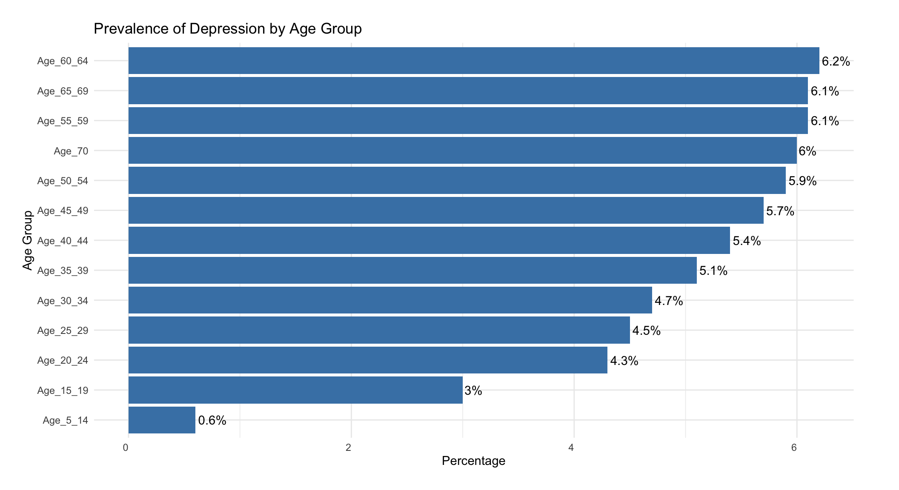

Pooja Rajendran Raju
About
Here’s a peek at my exploration of all things data
Categories
All
(18)
App
(1)
Blog
(5)
Exploration
(4)
Group Project
(4)
Machine Learning
(2)
Supply Chain
(2)
Exploring Finanace Data using PCA and Factor Analysis
Group Project
Data Description
Oct 2, 2025
Pooja Rajendran Raju and Others
Global Dietary Trends
Exploration
This report focuses on the analysis of daily caloric supply derived from carbohydrates, protein, and fat across multiple countries from 1961 to the most recent available…
Jul 1, 2025
Pooja Rajendran Raju
Principle Component Analysis and Classifiers
Machine Learning
This project explores two areas of statistical learning: understanding structure in multivariate data using resampling, and comparing modelling approaches for a supervised…
May 4, 2025
Pooja Rajendran Raju
Introduction - Exploring Machine Learning
Machine Learning
Confusion Matrix
Mar 17, 2025
Pooja Rajendran Raju
The Relationship Between Weather and Atmospheric Pollutants
Group Project
The purpose of this report is to explore the relationship between air pollution and weather in Australia. Four research questions will be addressed:
Nov 28, 2024
Travis Rutledge and Pooja Rajendran Raju
From Isolation to Connection: How the World Managed Mental Health in 2020
Blog
When COVID-19 hit, the world didn’t just face a health crisis—it also grappled with a mental health crisis. Depression rates surged as people dealt with isolation, financial…
Oct 16, 2024
Pooja Rajendran Raju
Do different sensors at the same location report the same values?
Group Project
Pollutants with the strongest evidence for public health concern include particulate matter (PM), sulfur dioxide (SO2), ozone (O3), nitrogen dioxide (NO2) and carbon…
Sep 24, 2024
Pooja Rajendran Raju & Thi My Ngoc Tran
Diving Deeper into Data Exploration: Visualisation
Exploration
doubledecker(xtabs(n ~ Dept + Gender + Admit, data = ucba), gp = gpar(fill = c(“grey90”, “orangered”)))
Sep 16, 2024
Pooja Rajendran Raju
Renewable Energy Transition over Decades Around the World
Group Project
The report centers on the comprehensive analysis tracing the trajectory of energy generation trends spanning ancient to modern times, elucidating the notable transition from…
Sep 13, 2024
Echidna Group
Breaking Down Different Media Formats
Blog
The article studied here is from The Conversation, titled “Australians say AI shouldn’t produce political news, but its OK for sport: new research”, available online via The…
Aug 22, 2024
Pooja Rajendran Raju
Coping Methods App Documentation
App
The
Coping Methods App
is an interactive Shiny application included with this package. It enables users to explore mental-health–related data through visualisations such as:
Aug 5, 2024
Pooja Rajendran Raju
Diving Deeper into Data Exploration: Olympic Data
Exploration
a. Top 10 Countries by Gold Medal Count
Aug 5, 2024
Pooja Rajendran Raju
Diving Deeper into Data Exploration: Introduction
Exploration
The data to used is available from Tidy Tuesday 28 May 2024 page. Downloaded the data from here, using the
tidytuesdayR
package.
Aug 5, 2024
Pooja Rajendran Raju
Patagonia - Part 2 SCM Practices and Strategies
Supply Chain
Patagonia utilizes a form of the chase strategy to manage its production and inventory efficiently, aligning closely with its sustainability goals and ensuring that it meets…
May 22, 2024
Pooja Rajendran Raju

Exploring data methods to uncover how individuals managed anxiety and depression in 2020
Blog
Exploring the prevalence of depression by age, this study aims to analyze and understand the most three commonly used methods by individuals worldwide to cope with anxiety…
May 20, 2024
Pooja Rajendran Raju
Data deidentification and modification
Blog
As a data ethics officer, it is imperative to verify the ethical sourcing of data and ensure that adequate measures are in place to safeguard the security and privacy of…
May 18, 2024
Pooja Rajendran Raju
Patagonia - Exploring Sustainable Supply Chain
Supply Chain
Established in 1973 by Yvon Chouinard, Patagonia began as a small climbing gear business before diversifying into outdoor apparel. The brand swiftly gained renown for its…
May 12, 2024
Pooja Rajendran Raju
Exploring Fundamentals of Data
Blog
In this exploration, I develop an understanding of data collection, by utilising open data sources to extract and organise data to solve a problem. This includes the…
Mar 22, 2024
Pooja Rajendran Raju
No matching items